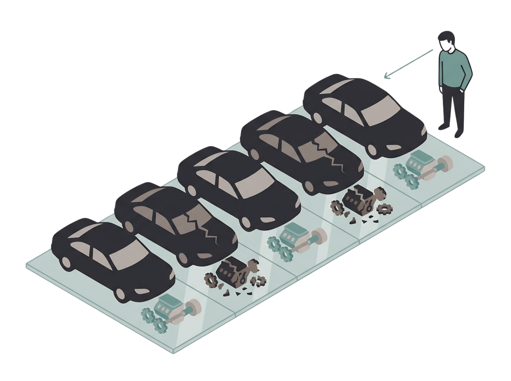
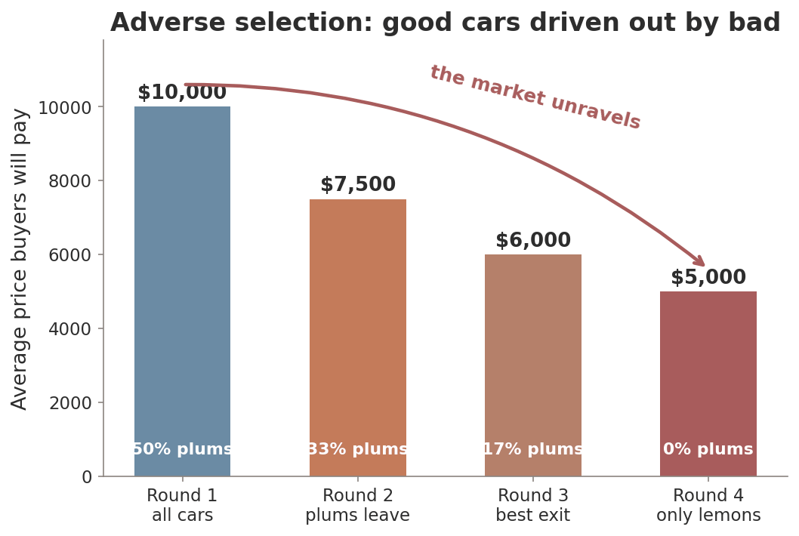
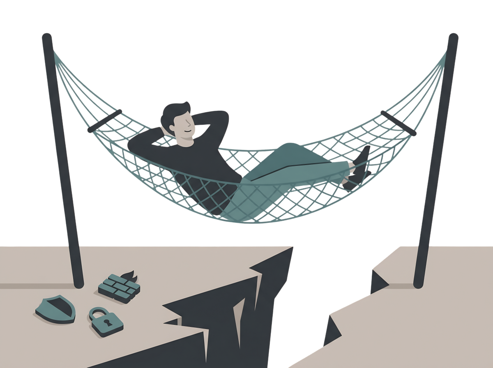
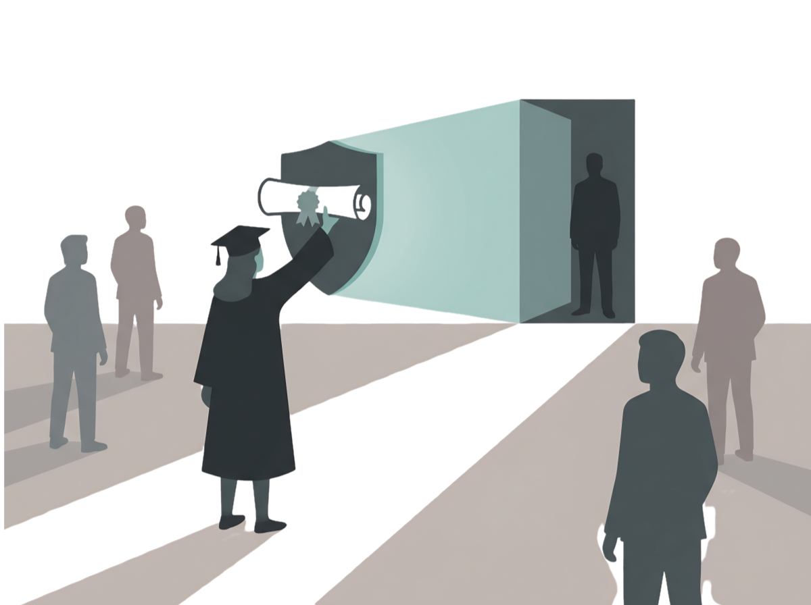
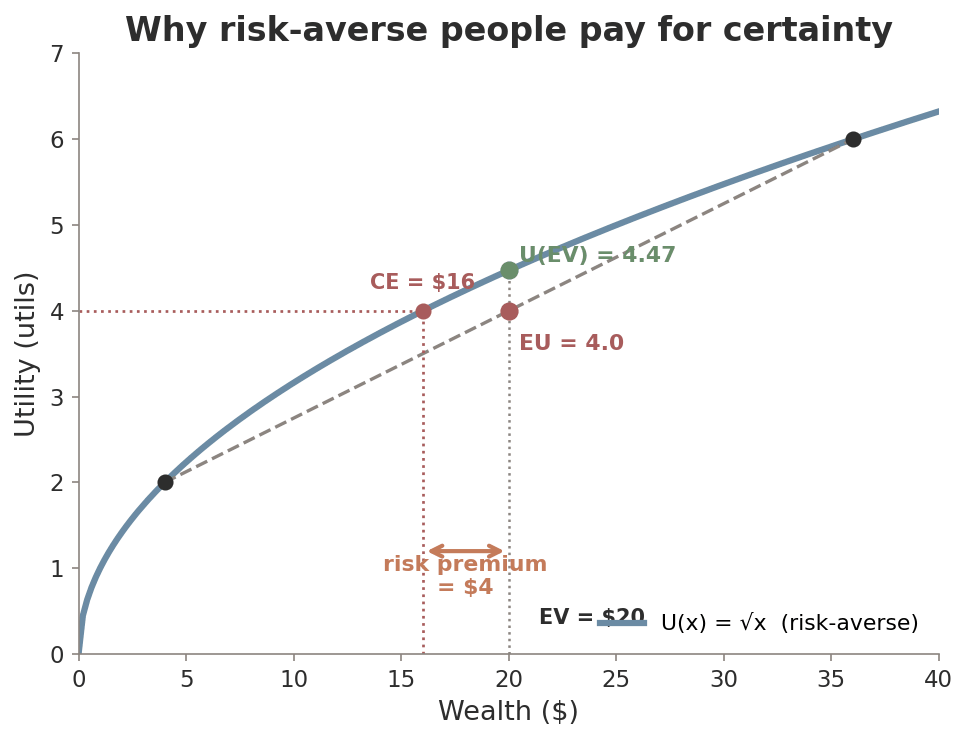
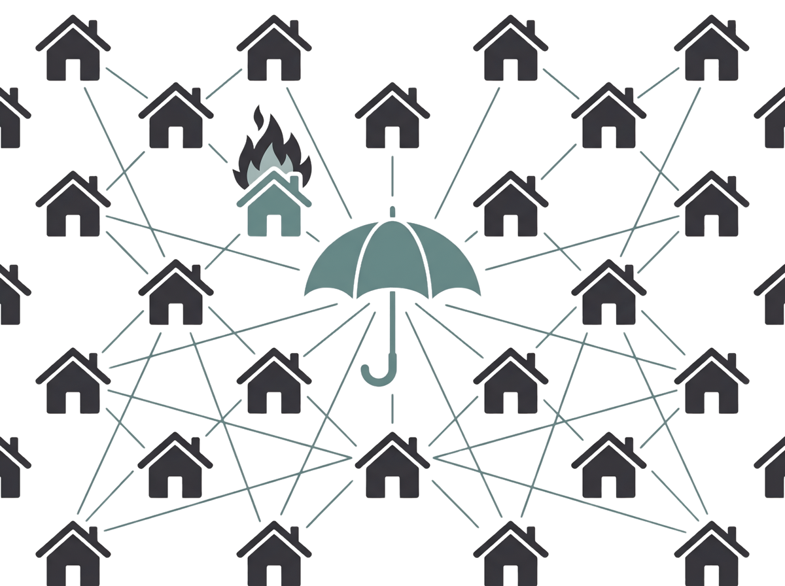
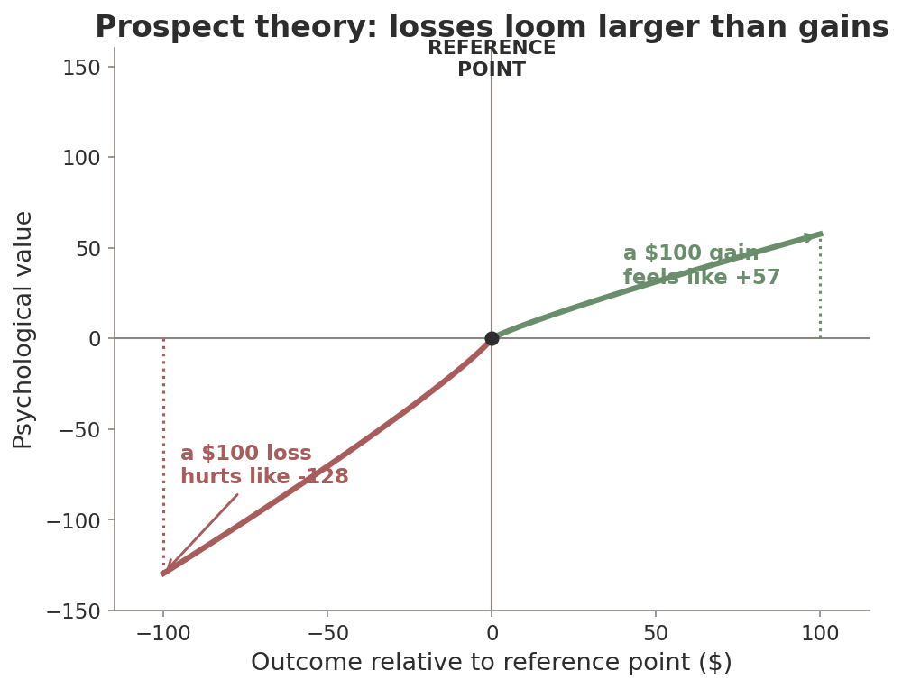
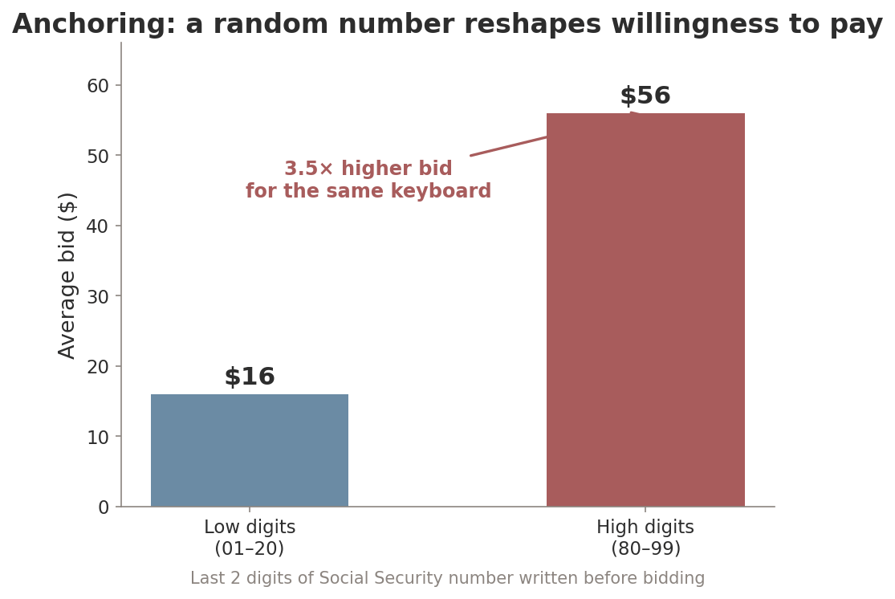
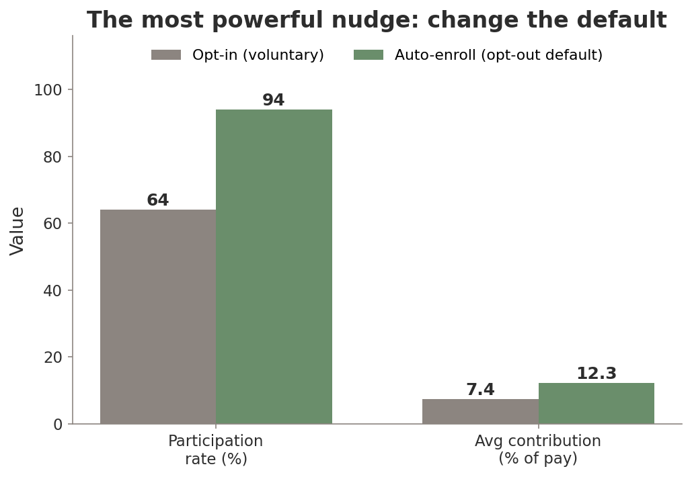

ECON 1116 • Principles of Microeconomics • Chapter 18
Signing up for Amazon Prime took one click. Cancelling took a war — employees nicknamed it the “Iliad Flow.” In 2025 it cost Amazon $2.5 billion. Why does that work on us?
Dr. Richeng Piao
Department of Economics
Northeastern University
18.1
Identify adverse selection and moral hazard in real-world markets
18.2
Explain how signaling & screening reduce information asymmetry
18.3
Calculate expected value and explain risk aversion
18.4
Identify common behavioral biases with real examples
18.5
Evaluate nudge policies — and tell a nudge from a dark pattern
Our Chapter 8 consumer was perfectly rational — weighing marginal utility per dollar. Name one real decision where you didn’t behave that way.
In Chapter 11, a monopolist offered different versions at different prices to sort customers. What was that called?
When you buy a used car, who knows more about it — you or the seller? What might go wrong because of that?
Discuss with your neighbor — 90 seconds.
In 2025 the FTC settled with Amazon over a Prime cancellation maze its own staff nicknamed after Homer’s decade-long war:
1 click
to sign up for Prime
4 pages
6 clicks, 15 nudges to cancel
$2.5B
settlement — largest ever
3 ideas
info, bias, policy
Amazon knew how you’d react to each screen better than you did (asymmetric information), and it weaponized your habit of giving up (behavioral bias) — so a regulator stepped in (policy).
Section 1 · LO 18.1
A trouble before the deal — and a trouble after.
Asymmetric information — one party to a transaction has more or better information than the other. The seller knows the transmission grinds; you don’t.
Adverse selection — before
Hidden type. The wrong people show up: the sickest buy insurance, the worst cars get sold.
Moral hazard — after
Hidden action. Behavior changes once you’re covered: you drive the rental harder.
Before the contract = who shows up. After the contract = what they do.
Two used cars: a reliable plum worth $15,000 and a defective lemon worth $5,000. The seller knows which; you can’t tell them apart.
Half each → you offer the average, $10,000. But no plum owner sells for $10k — only lemon owners accept. You lower your offer… and good cars vanish.
Rejected by 3 top journals as “too trivial.” Won the 2001 Nobel.


Each healthy person who drops coverage makes the pool sicker — so premiums rise — so more healthy people drop…
When enhanced ACA subsidies expired in 2026, premiums jumped ~114%; insurers proposed 18–20% median hikes.
A textbook death spiral — the lemons logic, played out in health insurance.
If Akerlof were the whole story, no one would buy a used car — yet Americans spend $72B/yr on them. Markets fight back:
Third-party verification
Carfax, 150-point inspections, Certified Pre-Owned. Cuts the info gap ≈ 12%.
Regulation
“Lemon laws” mandate disclosure; the ACA mandate pulled healthy buyers in.
Reputation
Yelp, eBay feedback, seller ratings. A low score today = fewer sales tomorrow.
None erase the gap — they raise the cost of selling a lemon enough to keep the plums in the market.
Moral hazard — you take on more risk because someone else bears the cost.
Do you drive a rental as carefully as your own car? Comparison-shop for a prescription when insurance pays?
SVB, 2023: guaranteeing all deposits stopped the run — but signaled “too big to fail.” The FDIC clawed back $16.7B to blunt it.

Cyber insurance — the fix
$15B market. Insurers require MFA, backups, endpoint detection to get coverage. Result: 64% of targets now refuse to pay ransoms.
Buy Now, Pay Later — the risk
$560B market. Painless 4-payment splits → 41% report a late payment; deep-subprime borrowers ≈ half of originations.
Insurers didn’t beat moral hazard with trust — they beat it with contract design (deductibles, required controls).
Insurers charge smokers higher premiums. The concern they’re guarding against — that the people who most want cheap coverage are the riskiest — is an example of…
Section 2 · LO 18.2
The informed side signals. The uninformed side screens.
A signal is a costly action the informed party takes to reveal their type — one that’s too expensive for a low type to fake.
A degree may signal more than it teaches: finishing a hard four-year program proves you’re the kind of person who can. The employer needn’t know your micro final grade.

Google, Apple, IBM, Tesla dropped degree requirements. By 2024, 81% of firms claimed skills-based hiring (up from 57%).
But a Harvard study of 11,000+ postings: non-degree hiring rose just 3.5pp. Fewer than 1 in 700 hires benefited.
Median weekly pay — bachelor’s
$1,754
Median weekly pay — HS only
$953
A lifetime earnings gap of roughly $1.2 million. The signal is remarkably resilient.
Screening — the uninformed party designs choices so the informed party reveals their type by choosing.
Plan A — Bronze
$200/mo, $5,000 deductible. The healthy 22-year-old picks it.
Plan B — Gold
$500/mo, $500 deductible. The 55-year-old with a chronic condition picks it.
By choosing, each customer reveals their health. Same machinery as 2nd-degree price discrimination (Ch 11) — but now the goal is extracting information, not just surplus.
Section 3 · LO 18.3
Now the future is uncertain for everyone — not just one side.
Expected value = the probability-weighted average of every outcome.
EV = (0.20 × $100) + (0.80 × $0) = $20
Ticket costs $15? Buy — you pay $15 for $20 on average. Costs $25? Pass.
Sports betting: Americans wagered $157B in FY2025. House edge 5–10%; a $100 parlay returns ≈$85–90.
So why do people take the bet? Prospect theory (§18.4): we overweight small chances of big wins.

Risk-averse: prefer a sure thing to a gamble with the same EV. Utility is concave.
Gamble: 50/50 $36 or $4. EV = $20, but utility of the gamble (EU=4) sits below U($20)=4.47.
Certainty equivalent = $16. You’d give up $4 to dodge the risk — the risk premium.
2% chance of a $200k fire → expected loss $4,000. You pay $5,500 — the $1,500 gap is your risk premium. Insurers profit by pooling thousands of independent risks.
When risk is correlated, pooling breaks. CA FAIR Plan policies +137%; Jan-2025 wildfires → $28–45B losses, a $6B shortfall, $1B emergency assessment.

Section 4 · LO 18.4
Real humans aren’t the calculator from Chapter 8.
Behavioral economics — combines psychology with economics to model how people actually decide, especially when they break the rational-choice predictions.
Chapter 8 previewed choice overload, default bias, framing, the decoy effect, mental accounting, endowment. Now we build the systematic framework — and show why it matters for markets and policy.
The key: deviations are predictable — which makes them useful for both helping people and exploiting them.

Kahneman & Tversky: we judge outcomes against a reference point, and a loss hurts ~2× as much as the same gain feels good.
2024 meta-analysis, 607 estimates: coefficient = 1.955. Coin flip −$10 / +$12? 70–80% refuse.
Explains the Iliad Flow: cancelling Prime feels like losing benefits you already “have.”

Anchoring — an initial number, even a random one, drags later judgments toward it.
Write your SSN’s last 2 digits, then bid: top-20% bid $56, bottom-20% bid $16 — same keyboard.
Zillow’s Zestimate anchors buyers — +5.94% buyer surplus, biggest help where info gaps are worst.
Present bias (hyperbolic discounting) — we overweight immediate rewards and underweight future consequences, even against our own long-term plans.
BNPL splits $200 into four painless $50s. Users took 6.3 loans/yr; the new product feels real, the future payments abstract.
Under-saving for retirement, procrastinating on a 30%-of-grade paper, gym memberships busy in January, empty by March.
It’s not that we don’t know better — the cost of starting always feels heavier than the distant benefit of finishing.
Status-quo bias
We stick with the current state — the default — because changing takes effort. The Iliad Flow lives here.
Framing effect
“90% fat-free” beats “10% fat.” “BOGO half-off” beats “25% off” — identical price.
Shrinkflation exploits framing: shrink the box, hold the price. 2025 GAO — it added 1.6pp to cereal and 3.0pp to paper-goods inflation.
A sunk cost is already paid and unrecoverable. Rational rule (Ch 1): ignore it. Yet we don’t.
You go to the concert because you paid — not because you still want to.
Sony’s Concord: $400M over 8 years, shut down 2 weeks after launch. MR fell below MC long before — sunk-cost psychology kept it alive.
Economist at Work — Saurabh Bhargava (CMU): of 20,000+ employees, 61% chose a dominated health plan — strictly worse on every dimension — overspending 24% of premium. Not stupidity: complexity.
You keep grinding a video game you stopped enjoying — only because you already bought the $40 battle pass. Which bias is driving you?
Section 5 · LO 18.5
If bias is predictable, should policy use it to help people?
Choice architecture
The design of the decision environment — option order, defaults, the framing of information.
Nudge
A small change to that environment that predictably shifts behavior without banning options or changing economic incentives.
Steer toward better outcomes — but keep people free to choose otherwise.

SECURE 2.0 (2025): new plans auto-enroll at 3–10%, auto-escalate yearly. You can still opt out.
Vanguard (5M accounts): 94% participate vs 64% opt-in; auto-savers put away 65% more.
Same options, same match — only the default flipped from opt-in to opt-out.
Nudges aren’t magic. A 2025 meta of 13 meta-analyses (~30M people): effect d=0.27 — but ~0.004 after correcting for publication bias.
Nudge serves the chooser. Sludge = friction designed to serve the firm — the Iliad Flow, Fortnite dark patterns.
FTC’s “click-to-cancel” rule (2024) was vacated in July 2025 — state laws now a patchwork.
Manipulation at scale
AI personalizes anchors, times nudges to your weak moments, A/B-tests thousands of frames. FTC found 250+ firms doing surveillance pricing (2024–25).
Your career
Every job hunt is an info-asymmetry game: you signal (degree, GPA, internships), you screen (Glassdoor, interview questions). AI resume filters add a new layer.
The dark pattern is no longer a static button — it’s a living algorithm that learns which of your biases to exploit. (More in Ch 19.)
1. Asymmetric information breeds adverse selection (wrong types show up) and moral hazard (behavior changes after).
2. Signals (degrees) & screens (menus) restore information and keep markets alive.
3. Expected value ranks gambles, but risk aversion means people pay a risk premium — that’s insurance.
4. Behavioral biases — loss aversion, anchoring, present bias, status-quo, framing, sunk cost — are predictable.
5. Nudges reshape choice architecture to help; dark patterns weaponize the same science to harm.
6. The line between a helpful default and a manipulative trap is whom the design serves — the chooser, or the firm.
Next time: Chapter 19 — Platforms, Networks & the Digital Economy. Where all of this runs at planetary scale.
Building On
Setting Up
From a used-car lot to a one-click cancellation maze — one idea: markets run on information and on minds, and both can fail.
A 50/50 gamble: win $200 or lose $100. A prospect-theory agent values gains at face value but losses at 2.25× (λ = 2.25).
Compute (a) the expected value and (b) the prospect-theory value V. Does she take the bet? One line of work.
Submit on Canvas. 3 minutes.